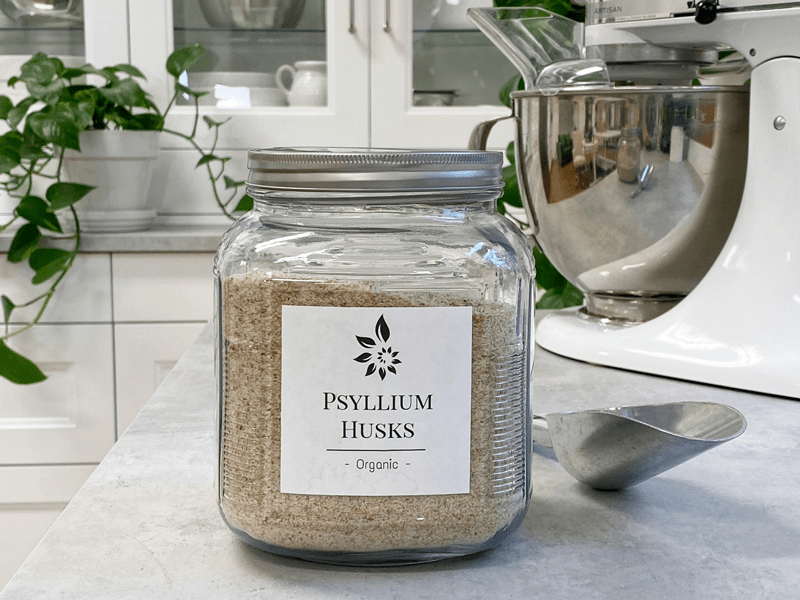

Psyllium (thickener)
Are you looking for a way to thicken your recipes plus have the added benefits of nutrition? Psyllium is a wonderful option that delivers both.

What is psyllium?
- It is available as coarse “husks” or finely ground.
- Psyllium seed husks contain both soluble and insoluble fiber. The soluble fiber dissolves in water and soothes the digestive tract with its mucilaginous properties, while the insoluble fiber acts like a broom to sweep the colon free of toxins.
- Pure psyllium seed husk contains no gluten. The psyllium plant is not a wheat. Look for a premium, pure product with no additives if you are on a celiac diet.
- Psyllium seed husks are one of nature’s most absorbent fibers, able to suck up over ten times their weight in water.
Health Benefits:
- 1 ounce has: Calories 91 / Fat 0 g / Carb 22.7 g / Fiber 22.7 g / Protein 0 g
- Studies have shown that psyllium relieves constipation. When combined with water, it swells and produces more bulk, which stimulates the intestines to contract and helps speed the passage of stool through the digestive tract.
- Due to the fiber in psyllium, it has been shown that a high fiber diet may help lower insulin and blood sugar levels and improve cholesterol levels in people with diabetes.
- Studies also show that a diet high in water-soluble fiber is associated with lower triglyceride levels and a lower risk of cardiovascular disease.
- Be sure to increase your water intake when eating foods that include psyllium.
High-Quality Brands
 How do I use psyllium?
How do I use psyllium?
- You can use it as an egg substitute in recipes.
- It can be used to thicken and give body to fillings, puddings, and sauces. Once added to a recipe, allow the ingredients to sit for 10+ minutes. This gives the psyllium time to activate and thicken.
- For best results, use a maximum of 1 tsp of ground psyllium per 2 cups total recipe volume. Whisk or blend briefly into a recipe. Be careful to not over-blend.
Disclaimer
This website is not intended to provide medical advice. All content, including text, graphics, images, and information available on this site is for general informational, entertainment, and educational purposes only.
The content is not intended to be a substitute for professional diagnosis or treatment. The author of this site is not responsible for any adverse effects that may occur from the application of the information on this site.
You are encouraged to make your own healthcare decisions, based on your research and in partnership with a qualified healthcare professional.
© AmieSue.com